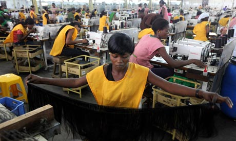
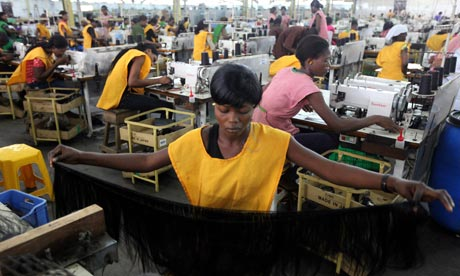

What is Really Going on in The Making of Your Clothes
The Meaning Behind The Picture

Textile offcuts in Bangladesh. The report highlights the innovative use of offcuts as one measure that could help reduce the fashion industry’s environmental footprint. Photograph: Mohammed Anwarul Kabir Choudhury/Alamy
More Pictures
 

The World of Shein Viedo
What You Don't Know About Cider Video
Worker's Stories Video
Photo Credits
"Waste cloths segregated at the sanitation park,
Ambikapur" by
India Water Portal is licensed under CC BY-NC-SA 2.0


 .
.
"
File:Some womens making clothes for sell it or maybe for them selfs.jpg" by
Haytam123258 is licensed under CC BY-SA 4.0